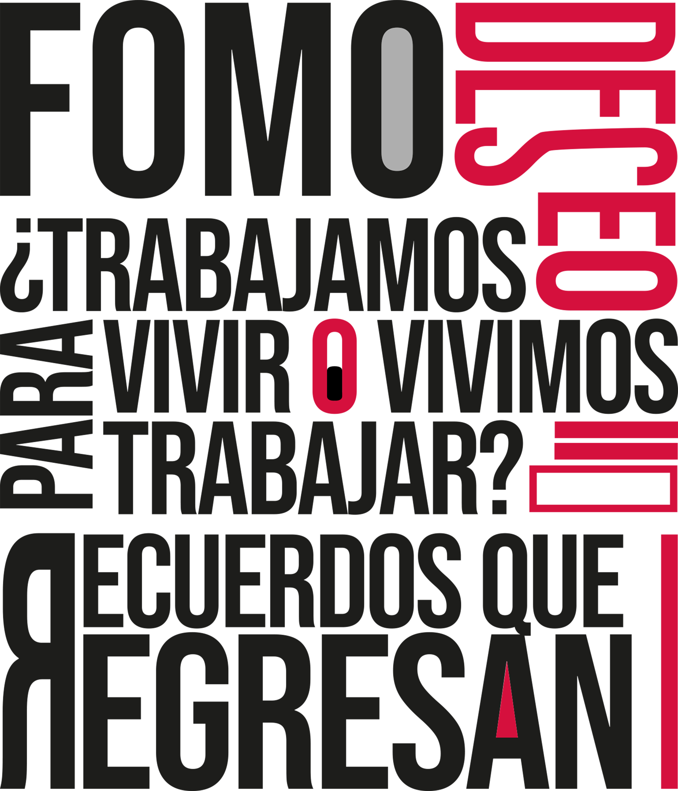

DESEO AL LÍMITE
El deseo es una de las fuerzas más potentes que atraviesan nuestra vida. Nos impulsa a construir proyectos, imaginar futuros posibles y buscar reconocimiento. Sin embargo, en un contexto marcado por la competencia constante y la exposición digital, ese impulso se puede transformar en una presión silenciosa.
El deseo de "ser alguien" se mezcla con la necesidad de destacar en redes sociales, de demostrar talento, productividad o éxito, haciendo que cada logro se mida públicamente, y cada comparación se convierta en la sensación de no ser suficiente.
En las relaciones intensas también se presenta esta combustión. El amor, la obsesión y la dependencia afectiva pueden convertirse en experiencias apasionadas, pero también vulnerables al exceso, y sumándole la influencia de la cultura visual y el marketing (estilos de vida ideales, cuerpos perfectos, trayectorias exitosas), el deseo deja de ser únicamente interno y se alimenta de imágenes que prometen una versión más "brillante" de ti.
